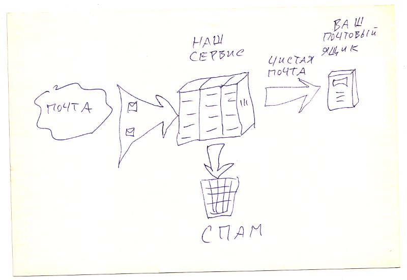
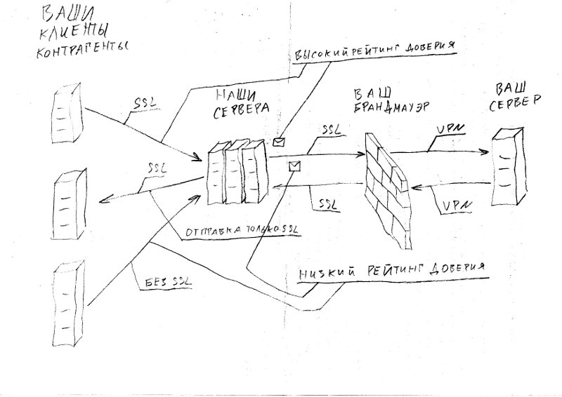

ПРОГРЕССИВНАЯ ФИЛЬТРАЦИЯ

Мы предоставляем услугу (SaaS) фильтрации электронной почты.
Услуга основана на облачной инфраструктуре,
не требует приобретения оборудования или программного обеспечения.
Услуга совместима с любым почтовым сервером.
Движение электронной почты управляется DNS. Изменяя свои записи DNS вы перенаправляете
электронную почту на наши сервера. Мы производим фильтрацию сообщений: отбрасываем спам, вирусы, фишинг
и передаем очищенный поток на ваш сервер.
Для корректной и эффктивной работы систем электронной почты требуется выполнить ряд технических условий.
Некоторые довольно нетривиальны, ими пренебрегают, это приводит к сбоям в работе и ложным срабатываниям.
Подключившись к нашей услуге вы снимаете с себя необходимость выполнения любых технических условий - мы все сделаем за вас!
Детальнее...
Согласно статистике более 95% корреспонденции в интернете является спамом.
Существует масса способов борьбы со спамом: методы на основе анализа содержимого писем,
статистические методы, репутационные. Большинство программных продуктов активно используют анализ
содержимого. Однако существует масса методов анализа динамики взаимодействия в ходе передачи электронного сообщения,
которые позволяют отсеять более 80% спама, что приводит к более точному выявлению и экономии ресурсов.
Для применения методов анализа динамики взаимодействия антиспам-решению необходимо обрабатывать оригинальное
сетевое соединение от отправителя, что для стандартных антиспам-приложений зачастую просто невозможно
либо значительно усложняет интеграцию. Использование антиспам-решения в качестве сервиса
позволяет более качественно обеспечить все необходимые меры для фильтрации электронной почты.
Важным аспектом является бнзопасность. С первого взгляда может показаться, что перенаправление почтового
трафика на "чужие" сервера резко снижает безопасность передачи. Однако для поддержания необходимого уровня
безопасности требуется выполнить ряд технических условий. Малейшая ошибка в конфигурации значительно снижает
степень безопасности при передаче электронной корреспонденции. В нашей команде работают профессионалы своего дела.
Обеспечение должного уровня сервиса - это наш хлеб. Наш сервис в качестве посредника обеспечивает постоянный контроль
выполнения необходимых технических условий, вы получите своевременное оповещение в случае нарушения.
Все аспекты безопасности и конфиденциальности зафиксированы в договоре.
Когда пользователь читает электронное сообщение, он видит имя отправителя, тему сообщения, получателя,
однако все эти поля довольно легко подделать. Что-бы убедиться что сообщение действительно подлинное
и отправитель действительно несет ответственность за информацию в данном сообщении
требуется соответствующая квалификация, которой обычно обладают только специалисты в своей отрасли.
Естественно, каждый сотрудник обладает своей уникальной квалификацией и не обязан изучать массу тонкостей
только для пользования электронной почтой. Когда мы пользуемся автомобилем, мы не задумываемся о том,
какие подсистемы задействованы для текущего режима, какие команды посылает бортовой компьютер в двигатель,
какие шестерни лучше задействовать в коробке передач в данный момент... и когда случается внештатный режим
мы просто видим сообщение на табло, в некоторой степени описывающее что именно произошло и чем это чревато.
Наш сервис предоставляет подобную услугу: каждое сообщение маркируется соответствующей информацией,
которая в лаконичной форме описывает степень доверия к данному сообщению. Теперь вам нет необходимости
тратить свое время на изучение технических особенностей сообщения либо привлекать соответствующего
специалиста для подтверждения подлинности сообщения - достаточно проверить единственный заголовок.

Входящие соединения от отправителей могут использовать защищенное соединение, а могут не использовать.
Но наличие защишенного соединения не достаточно для обеспечения безопасности - требуется проверить сертификат.
Мы автоматически доверяем официально выданным сертификатам - они подкреплены страхованием и ответственностью
регистратора. Но мы так-же даем возможность поднять степень доверия для любого самоподписанного сертификата,
что дает вам возможность добавить отправителя в белый список надежно его идентифицировав. Мы так-же ведем
переговоры с вашими контрагентами и даем рекомендации всем сторонам для повышения безопасности.
Может показаться странным, что мы как сервис фильтрации электронной почты уделяем довольно много усилий
для обеспечения безопасности. Дело в том, что спам по своей природе существует только по причине отсутствия
отвественности за содержимое в рассылаемой информации, по причине отсутствия идентификации отправителя.
Только лишь обеспечив соответствующие меры безопасности можно отфильтровать значительную долю спама.
Для входящих соединений от отправителей корреспонденции применяется множество методов идентификации отправителя
(SPF, DKIM, DNSBL, динамический анализ), что в свою очередь формирует маркер степени доверия для передаваемой
корреспонденции.
С наших серверов проверенная корреспонденция передается на ваши сервера только через защищенные сетевые
соединения (SSL). В качестве альтернативы мы предлагаем подключение к вашим серверам используя VPN-туннель,
что позовляет вам использовать фаервол а так-же снимает какие-либо технические требования для вашего канала
связи - вы можете использовать GSM-модем либо канал, зарегистрированный на физическое лицо, что позволяет
сэкономить. Вы так-же можете использовать несколько каналов связи с разными адресами, в том числе "серыми".
В качестве бонуса мы предлагаем веб-интерфейс для вашего imap-сервера. Ваши сотрудники получат возможность
оперативно и безопасно получить доступ к корпоративной почте из любой точки мира. Услуга опциональна.
При подключении вы получаете первые 14 дней бесплатно без функциональных ограничений.
Подключиться...
Мы предлагаем предоплатное и контрактное подклчение.
Предоплатное подключение предполагает публичный договор.
Средства вносятся на ваш лицевой счет автоматически через платежные системы, пластиковыми картами
либо иными способами в личном кабинете. Ежемесячно с вашего лицевого счета списывается сумма по фактическому
использованию ресурсов.
Контрактное подключение предполагает двухсторонний договор. Минимальный срок договора - 3 месяца.
Оплата производится банковским платежом на юридическое лицо.
| Количество ящиков в домене | Стоимость за месяц |
| до 10 | 1 руб/ящик |
| до 100 | 20 руб/ящик |
| более 100 | 300 руб/ящик |
| Срок договора | Скидка |
| более 1 года | 1% |
| более 2 лет | 20% |
Реквизиты предприятия
Индивидуальный предприниматель Рыбалко Роман Вячеславович
ИНН 123456789012
ОГРН 123456789012
Контактный телефон: +79637621644
Контактный e-mail: info@advancedfiltering.ru
Состав команды
Роман Рыбалко
Аналитик, стратег по развитию, специалист по сервисам и коммуникации.
Felix Tang
Специалист по оборудованию, развёртыванию и мониторингу.
Александр Абаржи
Специалист по информационной безопасности, криптографии и аппаратному обеспечению.
Введите учетные данные
Готово
Ошибка
Регистрация
Готово
Ошибка
Настройки
Готово
Ошибка
Проверка на сбой
Готово
Ошибка